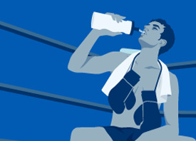

product 製品情報
About ポカリの特長
Scene こんなときにも
Hydration 水分補給について
Action ポカリは応援します
CM&Graphic CM&グラフィック
Facebook 公式フェイスブック
NEWS 2017/07/01 新CM「踊る修学旅行編」を公開しました
花と音楽の変化で「乾き」をお知らせする新感覚なWEBコンテンツ、FLOWER DRY ALERT
熱中症を防ぐためには、正しい知識と日常生活における注意が基本です。
スタート前に「たべる」ポカリスエット。ポカリスエット ゼリー誕生。
なぜ水分補給に適しているの？
甘さには理由があります
身体を長時間うるおす理由
多くの研究データを蓄積！
医師も評価するポカリスエット
起床時や就寝前に
入浴前や入浴後に

運動能力の維持に
お酒を飲んだ時に
乗り物での移動中に
デスクワーク時に
熱中症対策に
乾燥の季節に
身体と水の深い関係
どうして汗をかくの？
“シーン別”汗をかく量は？
自発的脱水とは？
運動しなくても渇いている
水分補給のタイミング
子どもの水分補給の大切さ
高齢者の水分補給の大切さ
働く人の熱中症対策
トヨタの走りをサポートするポカリスエット
ルナプロジェクト
東京マラソン2017
ブカツのミカタ
サーモス×ポカリスエット コラボ
エールと、ともに。
フェスといえばポカリスエット
「キミの夢は、ボクの夢。」楽譜で応援！
ポカリスエットは、こんなチャレンジも
ポカリスエット基本情報
イオンウォーター基本情報
ポカリスエットの歴史
ポカリスエット誕生秘話
日常生活にイオンウォーター
イオンウォーター パウダータイプ
ポカリスエット ゼリー
販売地域
よくあるQ&A